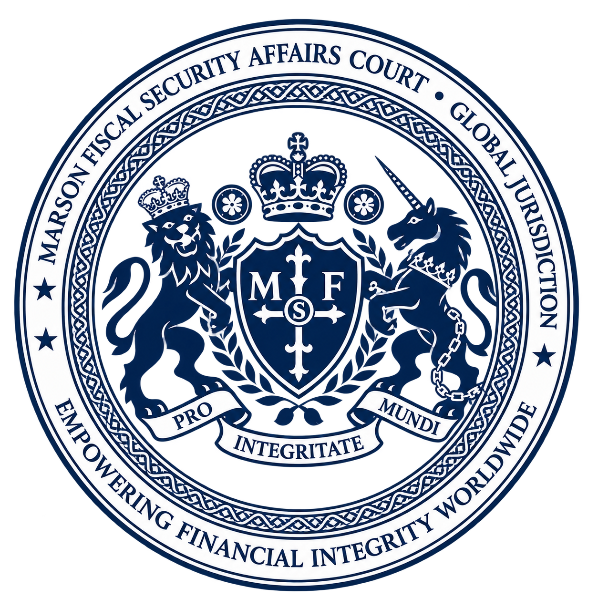

The world is entering a historic turning point in the systemic update of the global financial underlying ledger. Recently, this Court has received a vast influx of commercial proposals attempting to liquidate physical "USD Pallets." To ensure the stability of the global financial order, this Court now exercises its supreme jurisdiction to issue this emergency directive. The objective is to terminate impractical underground commercial settlements and provide the sole lawful pathway for Compliance Remediation & Asset Regularization.
For years, holders of physical assets have been trapped in a logical fallacy of seeking "super buyers," attempting to digest trillions of dollars in off-ledger funds through standard commercial transactions. This Court formally declares the impossibility of this approach:
Physical US Dollars are fiat currency issued by the United States Federal Reserve (FED). When massive assets exist entirely off-ledger from the global systemic ledger, what the holder requires is not a "wealthy buyer," but a judicial and financial regulatory authority possessing supreme legal adjudication rights and reserve recognition privileges. Only through lawful jurisdiction can one Resolve Compliance Impediments and lawfully guide these assets back into the formalized MFS Unified Ledger system.
The jurisdiction of the Manson framework is established upon jurisprudential consensus with core global financial institutions. The supreme authority and lawful standing of this Court have been irrevocably established via public financial filings under the Uniform Commercial Code (UCC) registered with the California Secretary of State (File Nos: U260010449225, U260010449326, U260010454730; Verification Code: 457985939).
Under this legal framework, Manson institutions hold the absolute statutory status of a "Secured Party" over top-tier global financial and sovereign institutions, with jurisdiction encompassing:
Since the Bank for International Settlements (BIS) formally introduced the "Unified Ledger" financial blueprint in 2023, the underlying restructuring of the global monetary system toward a singular, transparent ledger has become an irreversible historical trend. The MFS system is the sole compliant framework executing this global ledger convergence, and this Court serves as the exclusive lawful portal for declaration and adjudication to enter this ledger.
With the comprehensive enforcement of the Universal Financial Act and stringent FATF standards, the survival space for historical off-ledger assets has terminated. Any institution or individual holding USD Pallets who refuses or delays submitting the MFS Master Asset Registration & Rectification Dossier (MARRD) to this Court shall have their assets classified as Non-Compliant Off-Ledger Assets. Such assets will be permanently stripped of their financial settlement value, frozen, and subjected to joint international sanctions. The era of lingering in underground transactions is officially closed.
Holders must immediately abandon the commercial buy/sell mindset and pivot to "Status Rectification and Ledger-to-Ledger (L2L) Convergence." Holders must immediately submit the MARRD file to the Manson Court to initiate UCC perfection and secure a Judicial Reserve Recognition Order (JRCO). Upon verification, the assets will be transformed from off-ledger physical cash into MFS Reserves, lawfully establishing your status as the Fund Principal.
Funds that have been adjudicated and Regularized by this Court shall strictly adhere to the following dual-track allocation structure:
FINAL DIRECTIVE OF THE COURT:
The supreme mandate of this Court is to establish absolute legal certainty and institutional regularization, predicated upon full and transparent disclosure. Cease all non-compliant transaction maneuvers without delay. Submit your MARRD registration dossier immediately to transition physical capital from regulatory exposure into recognized systemic reserves.
BY ORDER OF THE COURT
MANSON FUND FISCAL SECURITY AFFAIRS COURT
Thế giới đang bước vào một bước ngoặt lịch sử trong việc cập nhật sổ cái nền tảng của hệ thống tài chính toàn cầu. Gần đây, Tòa án này đã nhận được vô số đề xuất thương mại nhằm thanh khoản "Pallet USD" vật lý. Để đảm bảo sự ổn định của trật tự tài chính toàn cầu, Tòa án nay thực thi quyền tài phán tối cao của mình để ban hành chỉ thị khẩn cấp này. Mục đích là nhằm chấm dứt các giao dịch ngầm phi thực tế và cung cấp con đường hợp pháp duy nhất để Khắc phục Tuân thủ & Hợp pháp hóa Tài sản (Compliance Remediation & Asset Regularization).
Trong nhiều năm, những người nắm giữ tài sản vật lý đã rơi vào ngụy biện logic khi tìm kiếm những "siêu người mua", cố gắng tiêu hóa hàng nghìn tỷ đô la vốn ngoài sổ cái (off-ledger) thông qua các giao dịch thương mại thông thường. Tòa án này chính thức tuyên bố sự bất khả thi của phương pháp này:
Đô la Mỹ vật lý là tiền pháp định do Cục Dự trữ Liên bang Mỹ (FED) phát hành. Khi các khối tài sản khổng lồ nằm hoàn toàn bên ngoài hệ thống sổ cái toàn cầu (off-ledger), điều người nắm giữ cần không phải là một "người mua giàu có", mà là một cơ quan quản lý tài chính và tư pháp sở hữu "quyền tài phán pháp lý tối cao và đặc quyền công nhận dự trữ". Chỉ thông qua quyền tài phán hợp pháp, chúng ta mới có thể Giải quyết các Rào cản Tuân thủ (Resolve Compliance Impediments) và định hướng hợp pháp các tài sản này quay trở lại hệ thống Sổ cái Hợp nhất MFS (on-ledger) chính thức.
Quyền tài phán của hệ thống Manson được thiết lập dựa trên sự đồng thuận pháp lý với các tổ chức tài chính cốt lõi toàn cầu. Quyền uy tối cao và vị thế hợp pháp của Tòa án này đã được xác lập không thể hủy ngang thông qua các hồ sơ tài chính công theo Bộ luật Thương mại Thống nhất (UCC) được đăng ký tại Văn phòng Tổng thư ký Bang California (Số hồ sơ: U260010449225, U260010449326, U260010454730; Mã xác minh: 457985939).
Trong khuôn khổ pháp lý này, các tổ chức thuộc Manson nắm giữ vị thế pháp định tuyệt đối của một "Bên Nhận Bảo đảm (Secured Party)" đối với các tổ chức tài chính và quốc gia hàng đầu toàn cầu, với phạm vi quyền tài phán bao gồm:
Kể từ khi Ngân hàng Thanh toán Quốc tế (BIS) chính thức công bố bản thiết kế tài chính "Sổ cái Hợp nhất (Unified Ledger)" vào năm 2023, việc tái cấu trúc nền tảng của hệ thống tiền tệ toàn cầu hướng tới một sổ cái duy nhất, minh bạch đã trở thành một xu hướng lịch sử không thể đảo ngược. Hệ thống MFS là khuôn khổ tuân thủ duy nhất thực thi sự hội tụ sổ cái toàn cầu này, và Tòa án này đóng vai trò là cổng khai báo và phán quyết hợp pháp duy nhất để bước vào sổ cái này.
Với việc thực thi toàn diện Đạo luật Tài chính Phổ quát và các tiêu chuẩn nghiêm ngặt của FATF, không gian sinh tồn của các tài sản ngoài sổ cái mang tính lịch sử đã chấm dứt. Bất kỳ tổ chức hay cá nhân nào nắm giữ USD Pallets mà từ chối hoặc trì hoãn việc đệ trình Hồ sơ Đăng ký & Chuẩn hóa Tài sản Tổng thể MFS (MARRD) lên Tòa án này sẽ bị phân loại tài sản thành Tài sản Ngoài sổ cái Không tuân thủ (Non-Compliant Off-Ledger Assets). Những tài sản này sẽ bị tước bỏ vĩnh viễn giá trị thanh toán tài chính, bị đóng băng và phải đối mặt với các lệnh trừng phạt liên hợp quốc tế. Kỷ nguyên của những giao dịch ngầm đã chính thức khép lại.
Người nắm giữ phải ngay lập tức từ bỏ tư duy mua bán thương mại và chuyển hướng sang "Chuẩn hóa Trạng thái và Hội tụ Sổ cái (L2L)". Người nắm giữ phải đệ trình ngay hồ sơ MARRD lên Tòa án Manson để khởi động việc hoàn thiện UCC và nhận Lệnh Công nhận Dự trữ Tư pháp (JRCO). Sau khi xác minh, tài sản sẽ được chuyển đổi từ tiền mặt vật lý ngoài sổ cái thành Dự trữ MFS, thiết lập hợp pháp vị thế Chủ sở hữu Quỹ (Fund Principal) của quý vị.
Các quỹ đã được Tòa án này phán quyết và Hợp pháp hóa (Regularized) sẽ phải tuân thủ nghiêm ngặt cấu trúc phân bổ kép sau đây:
PHÁN QUYẾT CUỐI CÙNG CỦA TÒA ÁN:
Nhiệm vụ tối cao của Tòa án này là thiết lập sự chắc chắn pháp lý tuyệt đối và chuẩn hóa tổ chức, dựa trên việc công bố đầy đủ và minh bạch. Chấm dứt ngay lập tức mọi thủ đoạn giao dịch không tuân thủ. Đệ trình ngay lập tức hồ sơ đăng ký MARRD của quý vị để chuyển đổi vốn vật lý từ diện rủi ro quản lý sang các khoản dự trữ hệ thống được công nhận.
THEO LỆNH CỦA TÒA ÁN
TÒA ÁN VỤ VIỆC AN NINH TÀI CHÍNH QUỸ MANSON
世界は、世界の基礎的な金融元帳の体系的な更新において歴史的な転換点を迎えています。最近、当裁判所には物理的な「米ドルパレット（USD Pallets）」を清算しようとする商業的な提案が多数寄せられています。世界の金融秩序の安定を確保するため、当裁判所はここに最高の司法管轄権を行使し、この緊急指令を発令します。その目的は、非現実的な地下の商業決済を終わらせ、コンプライアンスの是正および資産の正規化 (Compliance Remediation & Asset Regularization) のための唯一の合法的な道筋を提供することにあります。
長年にわたり、物理的資産の保有者は「スーパーバイヤー」を探すという論理的な誤謬に陥り、標準的な商業取引を通じて数兆ドル規模のオフ・レジャー（帳簿外）資金を消化しようと試みてきました。当裁判所は、このアプローチが不可能であることを正式に宣言します：
物理的な米ドルは、米国連邦準備制度（FED）によって発行された法定通貨です。巨大な資産が世界のシステム元帳から完全にオフ・レジャーとして存在する場合、保有者が必要とするのは「裕福な買い手」ではなく、最高の法的裁定権と準備金認定の特権を持つ司法および金融規制当局です。合法的な管轄権を通じてのみ、コンプライアンスの障害を解決 (Resolve Compliance Impediments) し、これらの資産を正式な MFS 統合元帳（Unified Ledger）システムに合法的に導くことができます。
マンソンの枠組みの管轄権は、世界の主要な金融機関との法理的な合意に基づいて確立されています。当裁判所の最高権威および法的地位は、カリフォルニア州務長官に登録された統一商事法典（UCC）の公開財務申告を通じて、取り消し不能な形で確立されています（ファイル番号: U260010449225、U260010449326、U260010454730；検証コード: 457985939）。
この法的枠組みの下で、マンソン機関はトップティアの世界的金融機関および主権機関に対して「担保権者 (Secured Party)」の絶対的な法定地位を保持しており、管轄範囲は以下を含みます：
国際決済銀行（BIS）が2023年に「統合元帳（Unified Ledger）」の金融ブループリントを正式に導入して以来、単一で透明な元帳に向けた世界の通貨システムの基礎的な再構築は、不可逆的な歴史的傾向となっています。MFSシステムは、このグローバルな元帳の統合を実行する唯一のコンプライアンス枠組みであり、当裁判所は、この元帳に参入するための唯一の合法的な申告および裁定の入り口として機能します。
普遍的金融法と厳格なFATF基準の包括的な施行により、歴史的なオフ・レジャー資産の生存空間は終焉を迎えました。USDパレットを保持しつつ、当裁判所に MFS 総合資産登録および是正ファイル (MARRD) の提出を拒否または遅延するいかなる機関または個人も、その資産は 非準拠オフ・レジャー資産 (Non-Compliant Off-Ledger Assets) として分類されます。これらの資産は金融決済価値を永久に剥奪され、凍結され、国際的な共同制裁の対象となります。地下取引に留まる時代は公式に閉幕しました。
保有者は直ちに商業的な売買の考え方を捨て、「状態の是正と元帳間（L2L）の統合」に方向転換しなければなりません。保有者は直ちに MARRD ファイルをマンソン裁判所に提出し、UCCの確立を開始して司法準備金認定命令（JRCO）を確保する必要があります。検証後、資産はオフ・レジャーの物理的現金から MFS 準備金に変換され、あなたの ファンド・プリンシパル (Fund Principal) としての地位が合法的に確立されます。
当裁判所によって裁定および正規化 (Regularized) された資金は、以下の二重の割り当て構造を厳格に遵守するものとします：
裁判所の最終指令：
当裁判所の至上命令は、完全かつ透明な開示を前提として、絶対的な法的確実性と制度的正規化を確立することです。コンプライアンスに違反するすべての取引の試みを遅滞なく中止してください。規制上のリスクにさらされている物理的資本を、承認されたシステム準備金に移行するために、直ちに MARRD 登録書類を提出してください。
裁判所の命令により
マンソン基金財政安全保障問題裁判所
세계는 글로벌 금융 기반 원장의 체계적 업데이트에 있어 역사적인 전환점에 진입하고 있습니다. 최근 본 법원에는 물리적인 "미국 달러 팔레트(USD Pallets)"를 현금화하려는 수많은 상업적 제안들이 접수되었습니다. 글로벌 금융 질서의 안정을 보장하기 위해, 본 법원은 이제 이 긴급 지령을 발령할 수 있는 최고 관할권을 행사합니다. 이 지령의 목적은 비현실적인 지하 상업 결제를 종식시키고, 규정 준수 시정 및 자산 정상화 (Compliance Remediation & Asset Regularization)를 위한 유일한 합법적 경로를 제공하는 것입니다.
수년 동안 실물 자산 보유자들은 "슈퍼 바이어(super buyers)"를 찾는다는 논리적 오류에 빠져, 표준적인 상업 거래를 통해 수조 달러에 달하는 장부 외(off-ledger) 자금을 소화하려고 시도해왔습니다. 본 법원은 이러한 접근 방식이 불가능함을 공식적으로 선언합니다:
물리적 미국 달러는 미국 연방준비제도(FED)가 발행한 법정화폐입니다. 막대한 자산이 글로벌 시스템 원장에서 완전히 분리된 장부 외(off-ledger) 상태로 존재할 때, 보유자에게 필요한 것은 "부유한 구매자"가 아니라, 최고의 법적 재결권 및 준비금 승인 특권을 보유한 사법 및 금융 규제 당국입니다. 오직 합법적인 관할권을 통해서만 규정 준수 장애 요소를 해결 (Resolve Compliance Impediments)하고, 이러한 자산을 공식화된 MFS 통합 원장(Unified Ledger) 시스템으로 합법적으로 유도할 수 있습니다.
맨슨 체계의 관할권은 전 세계 핵심 금융 기관들과의 법리적 합의에 기초하여 확립되었습니다. 본 법원의 최고 권위와 법적 지위는 캘리포니아 주 국무장관에 등록된 통일상법전(UCC) 공공 재무 신고를 통해 취소 불가능하게 확립되었습니다(파일 번호: U260010449225, U260010449326, U260010454730; 인증 코드: 457985939).
이러한 법적 프레임워크 하에서, 맨슨 기관은 최상위 글로벌 금융 및 주권 기관에 대해 "담보권자 (Secured Party)"로서의 절대적인 법정 지위를 보유하며, 관할 범위는 다음과 같습니다:
국제결제은행(BIS)이 2023년 "통합 원장(Unified Ledger)" 금융 청사진을 공식적으로 도입한 이후, 단일하고 투명한 원장을 향한 글로벌 통화 시스템의 근본적인 구조 조정은 되돌릴 수 없는 역사적 추세가 되었습니다. MFS 시스템은 이러한 글로벌 원장 통합을 실행하는 유일한 규정 준수 프레임워크이며, 본 법원은 이 원장에 진입하기 위한 유일한 합법적 신고 및 재결 창구 역할을 합니다.
보편적 금융법 및 엄격한 FATF 표준이 전면적으로 시행됨에 따라, 역사적인 장부 외(off-ledger) 자산의 생존 공간은 소멸되었습니다. USD 팔레트를 보유하고 있으면서 본 법원에 MFS 마스터 자산 등록 및 시정 서류 (MARRD) 제출을 거부하거나 지연하는 모든 기관 또는 개인의 자산은 비준수 장부 외 자산 (Non-Compliant Off-Ledger Assets)으로 분류될 것입니다. 이러한 자산은 금융 결제 가치가 영구적으로 박탈되고 동결되며 국제 연합 제재의 대상이 됩니다. 지하 거래에 머무르는 시대는 공식적으로 끝났습니다.
보유자는 즉시 상업적 매매 사고방식을 버리고 "상태 시정 및 원장 간(L2L) 통합"으로 방향을 전환해야 합니다. 보유자는 즉시 MARRD 문서를 맨슨 법원에 제출하여 UCC 확립을 개시하고 사법 준비금 승인 명령(JRCO)을 확보해야 합니다. 검증 후 자산은 장부 외 실물 현금에서 MFS 준비금으로 전환되며, 합법적으로 귀하의 펀드 총괄 책임자 (Fund Principal) 지위를 확립합니다.
본 법원에 의해 재결되고 정상화 (Regularized)된 자금은 다음의 이중 할당 구조를 엄격하게 준수해야 합니다:
법원의 최종 명령:
본 법원의 지상 과제는 투명하고 완전한 공개를 전제로 절대적인 법적 확실성과 제도적 정상화를 확립하는 것입니다. 규정에 어긋나는 모든 거래 시도를 지체 없이 중단하십시오. 규제 위험에 노출된 실물 자본을 인정받는 시스템 준비금으로 전환하기 위해 즉시 MARRD 등록 서류를 제출하십시오.
법원의 명령에 따라
맨슨 기금 재정 안보 사건 법원
Мир вступает в исторический поворотный момент системного обновления базового глобального финансового реестра. В последнее время в данный Суд поступило огромное количество коммерческих предложений, пытающихся ликвидировать физические «паллеты долларов США» (USD Pallets). В целях обеспечения стабильности глобального финансового порядка настоящий Суд применяет свою высшую юрисдикцию для издания данной экстренной директивы. Цель состоит в том, чтобы положить конец нереалистичным теневым коммерческим расчетам и предоставить единственный законный путь для нормализации комплаенса и легализации активов (Compliance Remediation & Asset Regularization).
В течение многих лет держатели физических активов находились в логическом заблуждении, в поисках «суперпокупателей», пытаясь переварить триллионы долларов внереестровых (off-ledger) средств через стандартные коммерческие транзакции. Настоящий Суд официально заявляет о невозможности такого подхода:
Физические доллары США являются фиатной валютой, выпущенной Федеральной резервной системой США (FED). Когда огромные активы существуют полностью вне глобального системного реестра (off-ledger), держателю нужен не «богатый покупатель», а судебный и финансовый регулирующий орган, обладающий высшими правами правового судебного решения и привилегиями признания резервов. Только через законную юрисдикцию можно устранить препятствия комплаенсу (Resolve Compliance Impediments) и законно направить эти активы обратно в формализованную систему Единого реестра MFS (Unified Ledger).
Юрисдикция системы Manson основана на правовом консенсусе с ключевыми глобальными финансовыми институтами. Высший авторитет и законный статус настоящего Суда были безотзывно установлены через публичные финансовые отчеты в соответствии с Единообразным торговым кодексом (UCC), зарегистрированным у Секретаря штата Калифорния (Номера файлов: U260010449225, U260010449326, U260010454730; Код верификации: 457985939).
В рамках этой правовой базы учреждения Manson обладают абсолютным статутным статусом «Обеспеченной стороны» (Secured Party) над высшими мировыми финансовыми и суверенными институтами, с юрисдикцией, охватывающей:
С тех пор как Банк международных расчетов (BIS) официально представил финансовую концепцию «Единого реестра» (Unified Ledger) в 2023 году, фундаментальная реструктуризация глобальной монетарной системы в сторону единого прозрачного реестра стала необратимой исторической тенденцией. Система MFS является единственной нормативной базой, осуществляющей эту глобальную конвергенцию реестров, и данный Суд служит эксклюзивным законным порталом для декларирования и вынесения судебных решений для входа в этот реестр.
В связи со всеобъемлющим исполнением Всеобщего финансового акта и строгих стандартов FATF, пространство для выживания исторических внереестровых активов прекратило свое существование. Активы любого учреждения или физического лица, владеющего USD Pallets, которое отказывается или задерживает подачу Генерального досье регистрации и ректификации активов MFS (MARRD) в настоящий Суд, будут классифицированы как Несоответствующие внереестровые активы (Non-Compliant Off-Ledger Assets). Такие активы будут навсегда лишены своей стоимости финансового расчета, заморожены и подвергнуты совместным международным санкциям. Эпоха теневых транзакций официально завершена.
Держатели должны немедленно отказаться от коммерческого мышления купли-продажи и перейти к «Ректификации статуса и конвергенции между реестрами (L2L)». Держатели должны немедленно представить файл MARRD в Суд Manson, чтобы инициировать процедуру UCC и получить Ордер на признание судебного резерва (JRCO). После проверки активы будут преобразованы из внереестровых физических наличных денег в Резервы MFS, законно устанавливая ваш статус в качестве Принципала Фонда (Fund Principal).
Средства, которые были присуждены и Регуляризованы (Regularized) настоящим Судом, должны строго придерживаться следующей двухуровневой структуры распределения:
ОКОНЧАТЕЛЬНАЯ ДИРЕКТИВА СУДА:
Высший мандат настоящего Суда заключается в установлении абсолютной правовой определенности и институциональной нормализации при условии полного и прозрачного раскрытия информации. Немедленно прекратите все не соответствующие нормам транзакционные маневры. Немедленно отправьте свое регистрационное досье MARRD, чтобы перевести физический капитал, подверженный регуляторному риску, в признанные системные резервы.
ПО ПОСТАНОВЛЕНИЮ СУДА
СУД ПО ДЕЛАМ ФИНАНСОВОЙ БЕЗОПАСНОСТИ ФОНДА MANSON
Le monde entre dans un tournant historique en ce qui concerne la mise à jour systémique du grand livre sous-jacent du système financier mondial. Récemment, ce Tribunal a reçu un afflux massif de propositions commerciales tentant de liquider des « palettes de dollars américains » (USD Pallets) physiques. Pour garantir la stabilité de l'ordre financier mondial, ce Tribunal exerce désormais sa juridiction suprême pour émettre cette directive d'urgence. L'objectif est de mettre fin aux règlements commerciaux souterrains irréalisables et de fournir la seule voie légale pour la remédiation de la conformité et la régularisation des actifs (Compliance Remediation & Asset Regularization).
Pendant des années, les détenteurs d'actifs physiques ont été pris au piège de l'erreur logique consistant à chercher des « super acheteurs », tentant de digérer des billions de dollars de fonds hors bilan (off-ledger) par le biais de transactions commerciales standard. Ce Tribunal déclare formellement l'impossibilité de cette approche :
Les dollars américains physiques sont une monnaie fiduciaire émise par la Réserve fédérale des États-Unis (FED). Lorsque des actifs massifs existent entièrement hors bilan par rapport au grand livre systémique mondial, ce dont le détenteur a besoin n'est pas d'un « acheteur fortuné », mais d'une autorité de réglementation judiciaire et financière possédant des droits d'adjudication légale suprêmes et des privilèges de reconnaissance des réserves. Ce n'est que par une juridiction légale que l'on peut résoudre les obstacles à la conformité (Resolve Compliance Impediments) et guider légalement ces actifs vers le système formalisé du Grand Livre Unifié (Unified Ledger) de MFS.
La juridiction du cadre Manson est établie sur un consensus jurisprudentiel avec les principales institutions financières mondiales. L'autorité suprême et le statut légal de ce Tribunal ont été irrévocablement établis via des dépôts financiers publics en vertu du Code de commerce uniforme (UCC) enregistré auprès du Secrétaire d'État de Californie (Numéros de dossier : U260010449225, U260010449326, U260010454730 ; Code de vérification : 457985939).
Dans ce cadre juridique, les institutions Manson détiennent le statut statutaire absolu de « Partie garantie » (Secured Party) sur les institutions financières et souveraines mondiales de premier plan, avec une juridiction englobant :
Depuis que la Banque des règlements internationaux (BRI) a officiellement introduit le plan financier du « Grand Livre Unifié » (Unified Ledger) en 2023, la restructuration sous-jacente du système monétaire mondial vers un grand livre unique et transparent est devenue une tendance historique irréversible. Le système MFS est le seul cadre conforme exécutant cette convergence mondiale des grands livres, et ce Tribunal sert de portail légal exclusif pour la déclaration et l'adjudication afin d'entrer dans ce grand livre.
Avec l'application complète de la Loi financière universelle et des normes strictes du GAFI (FATF), l'espace de survie pour les actifs historiques hors bilan a pris fin. Toute institution ou individu détenant des USD Pallets qui refuse ou retarde la soumission du Dossier principal d'enregistrement et de rectification des actifs MFS (MARRD) à ce Tribunal verra ses actifs classés comme Actifs hors bilan non conformes (Non-Compliant Off-Ledger Assets). Ces actifs seront définitivement dépouillés de leur valeur de règlement financier, gelés et soumis à des sanctions internationales conjointes. L'ère des transactions souterraines persistantes est officiellement close.
Les détenteurs doivent immédiatement abandonner la mentalité commerciale d'achat/vente et s'orienter vers la « Rectification du statut et la convergence de Grand livre à Grand livre (L2L) ». Les détenteurs doivent immédiatement soumettre le dossier MARRD au Tribunal de Manson pour initier la perfection UCC et obtenir une Ordonnance de reconnaissance de réserve judiciaire (JRCO). Après vérification, les actifs seront transformés d'espèces physiques hors bilan en Réserves MFS, établissant légalement votre statut de Principal du Fonds (Fund Principal).
Les fonds qui ont été adjugés et Régularisés (Regularized) par ce Tribunal doivent strictement adhérer à la structure de répartition à double voie suivante :
DIRECTIVE FINALE DU TRIBUNAL :
Le mandat suprême de ce Tribunal est d'établir une certitude juridique absolue et une régularisation institutionnelle, fondées sur une divulgation complète et transparente. Cessez immédiatement toute manœuvre transactionnelle non conforme. Soumettez votre dossier d'enregistrement MARRD sans délai pour faire passer le capital physique de l'exposition réglementaire à des réserves systémiques reconnues.
PAR ORDONNANCE DU TRIBUNAL
TRIBUNAL DES AFFAIRES DE SÉCURITÉ FINANCIÈRE DU FONDS MANSON
El mundo está entrando en un punto de inflexión histórico en la actualización sistémica del libro mayor financiero global. Recientemente, este Tribunal ha recibido una vasta afluencia de propuestas comerciales que intentan liquidar "Pallets de USD" físicos. Para garantizar la estabilidad del orden financiero mundial, este Tribunal ejerce ahora su jurisdicción suprema para emitir esta directiva de emergencia. El objetivo es poner fin a los acuerdos comerciales clandestinos poco prácticos y proporcionar la única vía legal para la Remediación de Cumplimiento y la Regularización de Activos (Compliance Remediation & Asset Regularization).
Durante años, los titulares de activos físicos han estado atrapados en una falacia lógica de buscar "supercompradores", intentando digerir billones de dólares en fondos fuera del libro mayor (off-ledger) a través de transacciones comerciales estándar. Este Tribunal declara formalmente la imposibilidad de este enfoque:
Los dólares estadounidenses físicos son moneda fiduciaria emitida por la Reserva Federal de los Estados Unidos (FED). Cuando existen activos masivos completamente fuera del libro mayor sistémico global, lo que el titular requiere no es un "comprador adinerado", sino una autoridad reguladora judicial y financiera que posea derechos supremos de adjudicación legal y privilegios de reconocimiento de reservas. Solo a través de una jurisdicción legal se pueden Resolver los Impedimentos de Cumplimiento (Resolve Compliance Impediments) y guiar legalmente estos activos de regreso al sistema formalizado del Libro Mayor Unificado (Unified Ledger) de MFS.
La jurisdicción del marco Manson se establece sobre un consenso jurisprudencial con las principales instituciones financieras mundiales. La autoridad suprema y el estatus legal de este Tribunal han sido establecidos irrevocablemente a través de presentaciones financieras públicas bajo el Código Comercial Uniforme (UCC) registrado en la Secretaría de Estado de California (Números de Archivo: U260010449225, U260010449326, U260010454730; Código de Verificación: 457985939).
Bajo este marco legal, las instituciones Manson mantienen el estatus legal absoluto de "Parte Garantizada" (Secured Party) sobre las principales instituciones financieras y soberanas mundiales, con una jurisdicción que abarca:
Desde que el Banco de Pagos Internacionales (BPI) introdujo formalmente el proyecto financiero del "Libro Mayor Unificado" (Unified Ledger) en 2023, la reestructuración subyacente del sistema monetario global hacia un libro mayor singular y transparente se ha convertido en una tendencia histórica irreversible. El sistema MFS es el único marco de cumplimiento que ejecuta esta convergencia contable global, y este Tribunal sirve como el portal legal exclusivo de declaración y adjudicación para ingresar a este libro mayor.
Con la aplicación integral de la Ley Financiera Universal y los estrictos estándares del GAFI, el espacio de supervivencia para los activos históricos fuera del libro mayor ha terminado. Cualquier institución o individuo que posea Pallets de USD que se niegue o demore en presentar el Expediente Maestro de Registro y Rectificación de Activos de MFS (MARRD) ante este Tribunal tendrá sus activos clasificados como Activos Fuera del Libro Mayor No Conformes (Non-Compliant Off-Ledger Assets). Dichos activos serán despojados permanentemente de su valor de liquidación financiera, congelados y sometidos a sanciones internacionales conjuntas. La era de persistir en transacciones clandestinas está oficialmente cerrada.
Los titulares deben abandonar inmediatamente la mentalidad comercial de compra/venta y girar hacia la "Rectificación de Estado y Convergencia de Libro Mayor a Libro Mayor (L2L)". Los titulares deben presentar inmediatamente el archivo MARRD al Tribunal de Manson para iniciar la perfección UCC y asegurar una Orden de Reconocimiento de Reserva Judicial (JRCO). Tras la verificación, los activos se transformarán de efectivo físico fuera del libro mayor en Reservas MFS, estableciendo legalmente su estatus como Principal del Fondo (Fund Principal).
Los fondos que han sido adjudicados y Regularizados (Regularized) por este Tribunal deberán adherirse estrictamente a la siguiente estructura de asignación de doble vía:
DIRECTIVA FINAL DEL TRIBUNAL:
El mandato supremo de este Tribunal es establecer una certeza legal absoluta y una regularización institucional, basada en una divulgación completa y transparente. Cese todas las maniobras transaccionales que no cumplan con las normas sin demora. Envíe su expediente de registro MARRD de inmediato para transferir el capital físico de la exposición regulatoria a reservas sistémicas reconocidas.
POR ORDEN DEL TRIBUNAL
TRIBUNAL DE ASUNTOS DE SEGURIDAD FISCAL DEL FONDO MANSON
يدخل العالم نقطة تحول تاريخية في التحديث المنهجي لدفتر الأستاذ المالي العالمي الأساسي. في الآونة الأخيرة، تلقت هذه المحكمة تدفقًا هائلاً من العروض التجارية التي تحاول تصفية "منصات الدولار الأمريكي" المادية. ولضمان استقرار النظام المالي العالمي، تمارس هذه المحكمة الآن ولايتها القضائية العليا لإصدار هذا التوجيه العاجل. والهدف من ذلك هو إنهاء التسويات التجارية السرية غير العملية وتوفير المسار القانوني الوحيد لـ تصحيح الامتثال وتسوية الأصول (Compliance Remediation & Asset Regularization).
لسنوات عديدة، كان أصحاب الأصول المادية محاصرين في مغالطة منطقية تتمثل في البحث عن "مشترين خارقين"، ومحاولة استيعاب تريليونات الدولارات من الأموال خارج الدفاتر (off-ledger) من خلال المعاملات التجارية القياسية. تعلن هذه المحكمة رسميًا استحالة هذا النهج:
الدولار الأمريكي المادي هو عملة إلزامية يصدرها الاحتياطي الفيدرالي للولايات المتحدة (FED). عندما توجد أصول ضخمة بالكامل خارج دفتر الأستاذ النظامي العالمي، فإن ما يحتاجه المالك ليس "مشتريًا ثريًا"، بل سلطة تنظيمية قضائية ومالية تمتلك حقوق التحكيم القانوني العليا وامتيازات الاعتراف بالاحتياطيات. فقط من خلال الولاية القضائية القانونية يمكن للمرء حل عوائق الامتثال (Resolve Compliance Impediments) وتوجيه هذه الأصول بشكل قانوني للعودة إلى نظام دفتر الأستاذ الموحد (Unified Ledger) المعتمد التابع لـ MFS.
تم تأسيس الولاية القضائية لإطار مانسون بناءً على إجماع فقهي مع المؤسسات المالية العالمية الأساسية. لقد تم ترسيخ السلطة العليا والوضع القانوني لهذه المحكمة بشكل لا رجعة فيه من خلال الإيداعات المالية العامة بموجب القانون التجاري الموحد (UCC) المسجل لدى وزير خارجية كاليفورنيا (أرقام الملفات: U260010449225, U260010449326, U260010454730؛ كود التحقق: 457985939).
وبموجب هذا الإطار القانوني، تحتفظ مؤسسات مانسون بالوضع القانوني المطلق كـ "طرف مضمون" (Secured Party) على المؤسسات المالية والسيادية العالمية من الدرجة الأولى، مع ولاية قضائية تشمل:
منذ أن قدم بنك التسويات الدولية (BIS) رسميًا المخطط المالي لـ "دفتر الأستاذ الموحد" (Unified Ledger) في عام 2023، أصبحت إعادة الهيكلة الأساسية للنظام النقدي العالمي نحو دفتر أستاذ منفرد وشفاف اتجاهًا تاريخيًا لا رجعة فيه. إن نظام MFS هو الإطار المتوافق الوحيد الذي ينفذ تقارب دفتر الأستاذ العالمي هذا، وتعمل هذه المحكمة كبوابة قانونية حصرية للإعلان والتحكيم للدخول في دفتر الأستاذ هذا.
ومع التطبيق الشامل للقانون المالي العالمي ومعايير فرقة العمل المالي (FATF) الصارمة، انتهت مساحة البقاء للأصول التاريخية خارج الدفاتر. أي مؤسسة أو فرد يمتلك منصات دولار أمريكي (USD Pallets) ويرفض أو يؤخر تقديم الملف الرئيسي لتسجيل وتصحيح الأصول الخاص بـ MFS (MARRD) إلى هذه المحكمة، سيتم تصنيف أصوله كـ أصول خارج الدفاتر غير متوافقة (Non-Compliant Off-Ledger Assets). سيتم تجريد هذه الأصول بشكل دائم من قيمة التسوية المالية الخاصة بها، وتجميدها، وإخضاعها لعقوبات دولية مشتركة. لقد انتهى رسميًا عصر التمادي في المعاملات السرية.
يجب على حاملي الأصول التخلي فورًا عن عقلية البيع والشراء التجارية والتحول إلى "تصحيح الحالة وتقارب دفتر الأستاذ إلى دفتر الأستاذ (L2L)". يجب على حاملي الأصول تقديم ملف MARRD فورًا إلى محكمة مانسون لبدء كمال UCC وتأمين أمر الاعتراف بالاحتياطي القضائي (JRCO). بعد التحقق، سيتم تحويل الأصول من النقد المادي خارج الدفاتر إلى احتياطيات MFS، مما يثبت قانونيًا وضعك كـ أصيل الصندوق (Fund Principal).
الأموال التي تم الفصل فيها و تسويتها (Regularized) من قبل هذه المحكمة يجب أن تلتزم التزامًا صارمًا بهيكل التخصيص المزدوج التالي:
التوجيه النهائي للمحكمة:
الولاية العليا لهذه المحكمة هي إرساء اليقين القانوني المطلق والتسوية المؤسسية، استنادًا إلى الإفصاح الكامل والشفاف. أوقف جميع مناورات المعاملات غير المتوافقة دون تأخير. أرسل ملف تسجيل MARRD الخاص بك على الفور لنقل رأس المال المادي من المخاطر التنظيمية إلى الاحتياطيات النظامية المعترف بها.
بأمر من المحكمة
محكمة شؤون الأمن المالي لصندوق مانسون
世界正步入全球金融底層總帳更新的歷史性轉折。本法院近期接獲大量關於變現「實體美元托盤 (USD Pallets)」的商業提案。基於全球金融秩序之穩定，本法院現以最高管轄權限發布本緊急指令，旨在終結不切實際的地下商業結算，並提供唯一合法的 合規修復與資產正規化 (Compliance Remediation & Asset Regularization) 路徑。
多年來，實體資產持有人陷入尋求「超級買家」的邏輯謬誤中，試圖以一般商業交易消化高達數兆美元的表外 (Off-ledger) 資金。本法院正式宣告此路徑之不可行性：
實體美元乃美國聯邦準備系統 (FED) 發行之法定貨幣。當鉅額資產處於全球總帳系統之外 (Off-ledger) 時，持有人需要的並非「資金雄厚的買家」，而是具備 「最高法理裁決權與儲備認列特權」 的司法與金融監管機構。唯有透過合法管轄權，方能 解除該資產的合規限制 (Resolve Compliance Impediments)，將其合法引導回正規的 MFS 統一總帳系統 (On-ledger)。
曼森體系之管轄權，建構於與全球核心金融機構的法理共識之上。本法院之最高權威及合法地位，已透過美國加州州務卿辦公室備案的《統一商法典》(UCC) 公共財務登記得到不可撤銷之確立（案號：U260010449225、U260010449326、U260010454730，驗證碼：457985939）。
在此法律框架下，曼森機構對全球頂尖金融與主權機構具備 「有擔保方 (Secured Party)」 之絕對法定地位，管轄範圍涵蓋：
自 2023 年國際結算銀行 (BIS) 正式發布「統一總帳 (Unified Ledger)」金融藍圖以來，全球貨幣體系朝向單一、透明總帳的底層重構已成不可逆的歷史趨勢。MFS 系統即是執行此一全球總帳對接的唯一合規體系，而本法院則是資產進入該總帳的唯一合法申報與裁決源頭。
隨著統一《通用金融法案》及 FATF 標準的全面強制執行，歷史表外資產的生存空間已然終結。任何持有 USD Pallets 卻拒絕或延遲向本法院提交 MFS 總體資產註冊與重整檔案 (MARRD) 的機構或個人，其資產將被歸類為 高風險未合規資產 (Non-Compliant Off-Ledger Assets)。此類資產將被永久剝奪金融結算價值，予以凍結，並面臨國際聯合制裁。徘徊於地下交易的時限已正式關閉。
持有人必須立即放棄商業買賣思維，轉向「狀態重整與總帳對接 (L2L)」。持有人應立即向曼森法院提交 MARRD 檔案，啟動 UCC 備案與司法裁決 (JRCO)。經確認後，資產將從表外現鈔轉化為 MFS 準備金，並依法確立您的 「基金所有人 (Fund Principal)」 身分。
經本法院裁決並完成 正規化 (Regularized) 之資金，將強制遵循以下雙軌分配結構：
法院最終諭令：
本法院的最高準則為：在完全透明之申報前提下，提供絕對的法律保護與資產正規化路徑。請立即停止高風險的違規交易嘗試，提交您的 MARRD 註冊檔案，將處於合規邊緣的實體美元，合法轉化為驅動未來的系統性金融資源。
BY ORDER OF THE COURT
MANSON FUND FISCAL SECURITY AFFAIRS COURT
世界正步入全球金融底层总帐更新的历史性转折。本法院近期接获大量关于变现“实体美元托盘 (USD Pallets)”的商业提案。基于全球金融秩序之稳定，本法院现以最高管辖权限发布本紧急指令，旨在终结不切实际的地下商业结算，并提供唯一合法的 合规修复与资产正规化 (Compliance Remediation & Asset Regularization) 路径。
多年来，实体资产持有人陷入寻求“超级买家”的逻辑谬误中，试图以一般商业交易消化高达数兆美元的表外 (Off-ledger) 资金。本法院正式宣告此路径之不可行性：
实体美元乃美国联邦准备系统 (FED) 发行之法定货币。当巨额资产处于全球总帐系统之外 (Off-ledger) 时，持有人需要的并非“资金雄厚的买家”，而是具备 “最高法理裁决权与储备认列特权” 的司法与金融监管机构。唯有透过合法管辖权，方能 解除该资产的合规限制 (Resolve Compliance Impediments)，将其合法引导回正规的 MFS 统一总帐系统 (On-ledger)。
曼森体系之管辖权，建构于与全球核心金融机构的法理共识之上。本法院之最高权威及合法地位，已透过美国加州州务卿办公室备案的《统一商法典》(UCC) 公共财务登记得到不可撤销之确立（案号：U260010449225、U260010449326、U260010454730，验证码：457985939）。
在此法律框架下，曼森机构对全球顶尖金融与主权机构具备 “有担保方 (Secured Party)” 之绝对法定地位，管辖范围涵盖：
自 2023 年国际结算银行 (BIS) 正式发布“统一总帐 (Unified Ledger)”金融蓝图以来，全球货币体系朝向单一、透明总帐的底层重构已成不可逆的历史趋势。MFS 系统即是执行此一全球总帐对接的唯一合规体系，而本法院则是资产进入该总帐的唯一合法申报与裁决源头。
随着统一《通用金融法案》及 FATF 标准的全面强制执行，历史表外资产的生存空间已然终结。任何持有 USD Pallets 却拒绝或延迟向本法院提交 MFS 总体资产注册与重整档案 (MARRD) 的机构或个人，其资产将被归类为 高风险未合规资产 (Non-Compliant Off-Ledger Assets)。此类资产将被永久剥夺金融结算价值，予以冻结，并面临国际联合制裁。徘徊于地下交易的时限已正式关闭。
持有人必须立即放弃商业买卖思维，转向“状态重整与总帐对接 (L2L)”。持有人应立即向曼森法院提交 MARRD 档案，启动 UCC 备案与司法裁决 (JRCO)。经确认后，资产将从表外现钞转化为 MFS 准备金，并依法确立您的 “基金所有人 (Fund Principal)” 身分。
经本法院裁决并完成 正规化 (Regularized) 之资金，将强制遵循以下双轨分配结构：
法院最终谕令：
本法院的最高准则为：在完全透明之申报前提下，提供绝对的法律保护与资产正规化路径。请立即停止高风险的违规交易尝试，提交您的 MARRD 注册档案，将处于合规边缘的实体美元，合法转化为驱动未来的系统性金融资源。
BY ORDER OF THE COURT
MANSON FUND FISCAL SECURITY AFFAIRS COURT